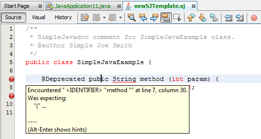
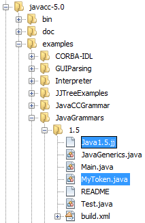
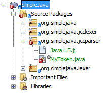
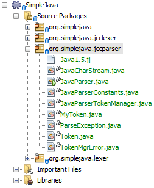
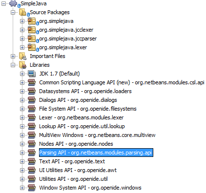
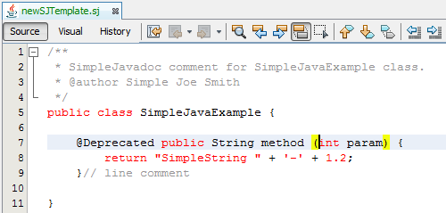
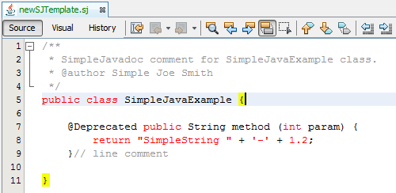
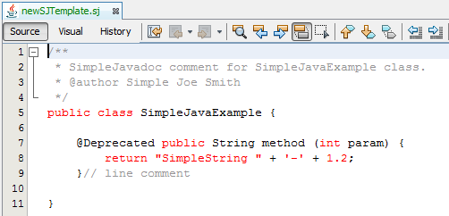
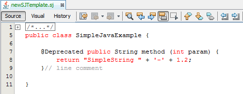

Apache NetBeans
Apache NetBeansLatest release
JavaCC Parser Generator Integration Tutorial for the NetBeans Platform
| This tutorial needs a review. You can edit it in GitHub following these contribution guidelines. |
This tutorial shows you how to generate a parser with JavaCC and use it to create features in a NetBeans editor.
| Prior to starting to work on this tutorial, you must have completed the JavaCC Lexer Generator Integration Tutorial, since that tutorial shows how to create the module structure, file type support, and lexer used in the instructions that follow. |
You will learn how to create several features in a NetBeans editor, based on your JavaCC parser, such as a syntax error parser, as shown below:

-
Implementing New Features
For troubleshooting purposes, you are welcome to download the completed tutorial source code.
Generating a Parser from JavaCC
Let’s now use JavaCC to generate a parser, in the same way as we generated a lexer in the JavaCC Lexer Generator Integration Tutorial. We’ll need to edit the JavaCC grammar file less than we did in the previous tutorial, since we’re not going to remove the parser generator as we did last time.
-
Create a new package named
org.simplejava.jccparserin your project. Copy into the new package the sameJava1.5.jjfile that you copied in the previous tutorial, from the JavaCC distribution, as before. This time, also include the "MyToken.java" file:

In your project structure, you should now see your new package and new file:

We’re now going to slightly tweak the Java1.5.jj file again so that it fits our parsing needs.
-
The
MyTokenclass can’t be compiled because it is missing a package statement. Add it:
package org.simplejava.jccparser;The class will still not compile because the implementing class Token does not exist yet. We will generate that class in the next step.
-
We need to make sure that the classes that JavaCC will generate for us will be generated with the correct package statements. Add "package org.simplejava.jccparser;" to
Java1.5.jjfile after the "PARSER_BEGIN(JavaParser)" line:
PARSER_BEGIN(JavaParser)
package org.simplejava.jccparser;
import java.io.*;-
That’s all we need to do. The
Java1.5.jjfile is ready now and we can generate our parser from the command line, in the same way as in the previous tutorial. The result should be as follows:

As you can see, JavaCC has generated several files, which we will use in the next sections. All the files should be compilable, that is, there should be no error marks anywhere in the module, as can be seen in the screenshot above.
You’ve now completed the JavaCC part of the tutorial. The time has come to use the generated files to extend your NetBeans Lexer plugin.
Integrating the JavaCC Parser with NetBeans APIs
In this section, we take the files generated in the previous section and integrate them with the NetBeans Parsing API.
-
In the Projects window, right-click the Libraries node, and choose Add Module Dependency. Look for the "Parsing API" module in the list. When you click OK, you should see the "Parsing API" module is now a dependency in your module:

-
In your module, create a new package named
org.simplejava.parser.
-
The first NetBeans APIclass you need to implement is
org.netbeans.modules.parsing.spi.Parser. Create a class namedSJParserand define it as follows:
package org.simplejava.parser;
import java.io.Reader;
import java.io.StringReader;
import java.util.logging.Level;
import java.util.logging.Logger;
import javax.swing.event.ChangeListener;
import org.netbeans.modules.parsing.api.Snapshot;
import org.netbeans.modules.parsing.api.Task;
import org.netbeans.modules.parsing.spi.Parser;
import org.netbeans.modules.parsing.spi.Parser.Result;
import org.netbeans.modules.parsing.spi.SourceModificationEvent;
import org.simplejava.jccparser.JavaParser;
public class SJParser extends Parser {
private Snapshot snapshot;
private JavaParser javaParser;
@Override
public void parse (Snapshot snapshot, Task task, SourceModificationEvent event) {
this.snapshot = snapshot;
Reader reader = new StringReader(snapshot.getText().toString ());
javaParser = new JavaParser(reader);
try {
javaParser.CompilationUnit ();
} catch (org.simplejava.jccparser.ParseException ex) {
Logger.getLogger (SJParser.class.getName()).log (Level.WARNING, null, ex);
}
}
@Override
public Result getResult (Task task) {
return new SJParserResult (snapshot, javaParser);
}
@Override
public void cancel () {
}
@Override
public void addChangeListener (ChangeListener changeListener) {
}
@Override
public void removeChangeListener (ChangeListener changeListener) {
}
public static class SJParserResult extends Result {
private JavaParser javaParser;
private boolean valid = true;
SJParserResult (Snapshot snapshot, JavaParser javaParser) {
super (snapshot);
this.javaParser = javaParser;
}
public JavaParser getJavaParser () throws org.netbeans.modules.parsing.spi.ParseException {
if (!valid) throw new org.netbeans.modules.parsing.spi.ParseException ();
return javaParser;
}
@Override
protected void invalidate () {
valid = false;
}
}
}-
Register the parser in the language class created in the previous tutorial, as follows:
package org.simplejava;
import org.netbeans.api.lexer.Language;
import org.netbeans.modules.csl.spi.DefaultLanguageConfig;
import org.netbeans.modules.csl.spi.LanguageRegistration;
import org.netbeans.modules.parsing.spi.Parser;
import org.simplejava.lexer.SJTokenId;
import org.simplejava.parser.SJParser;
@LanguageRegistration(mimeType = "text/x-sj")
public class SJLanguage extends DefaultLanguageConfig {
@Override
public Language getLexerLanguage() {
return SJTokenId.getLanguage();
}
@Override
public String getDisplayName() {
return "SJ";
}
*@Override
public Parser getParser() {
return new SJParser();
}*
}You now have an implementation of the NetBeans Parsing API based on a JavaCC parser generated from a JavaCC grammar definition. Your parser generated by JavaCC is registered in the NetBeans Platform. You can compile and run the module. However, your parser will never be called simply because you don’t have code asking for the parser results. Since there is no client of your parser yet, let’s create one in the next section.
Implementing a New Feature: Error Parsing
Now you will create a first client of your SJParser . This client (task) will show syntax errors in the NetBeans editor sidebar, also known as its "gutter".
Before working on the related code, we need to make some modifications to the generated parser. The parser throws a ParseException when it finds the first error in the source code. This is the default behavior of parsers generated by JavaCC. But in the NetBeans editor we need to detect more than just one syntax error. Therefore, we need to add some simple error recovery to the parser before integrating the NetBeans error parsing code with it.
Adding Simple Error Recovery to the Parser
-
The tweaks below should both be done in
Java1.5.jjfile in yourorg.simplejava.jccparserpackage.-
Change "ERROR_REPORTING = false;" to "ERROR_REPORTING = true;":
-
options {
JAVA_UNICODE_ESCAPE = true;
ERROR_REPORTING = true;
STATIC = false;
COMMON_TOKEN_ACTION = false;
TOKEN_FACTORY = "MyToken";
JDK_VERSION = "1.5";
}-
Add "import java.util.*;" to your Java1.5.jj file:
PARSER_BEGIN(JavaParser)
package org.simplejava.jccparser;
import java.io.;
*import java.util.\;*-
Run JavaCC on the
Java1.5.jjfile again, the same way as you did in the previous section.
-
These additions and changes should be done in your
JavaParserclass.-
Add the following method to your
JavaParserbody:
-
public List<ParseException> syntaxErrors = new ArrayList<ParseException>();
void recover (ParseException ex, int recoveryPoint) {
syntaxErrors.add (ex);
Token t;
do {
t = getNextToken ();
} while (t.kind != EOF && t.kind != recoveryPoint);
}-
Catch
ParseExceptionsinCompilationUnit,FieldDeclaration,MethodDeclaration, andStatement:
final public void CompilationUnit() throws ParseException {
try {
if (jj_2_1(2147483647)) {
PackageDeclaration();
} else {
;
}
label_1:
while (true) {
switch ((jj_ntk == -1) ? jj_ntk() : jj_ntk) {
case IMPORT:
;
break;
default:
break label_1;
}
ImportDeclaration();
}
label_2:
while (true) {
switch ((jj_ntk == -1) ? jj_ntk() : jj_ntk) {
case ABSTRACT:
case CLASS:
case ENUM:
case FINAL:
case INTERFACE:
case NATIVE:
case PRIVATE:
case PROTECTED:
case PUBLIC:
case STATIC:
case STRICTFP:
case SYNCHRONIZED:
case TRANSIENT:
case VOLATILE:
case SEMICOLON:
case AT:
;
break;
default:
break label_2;
}
TypeDeclaration();
}
switch ((jj_ntk == -1) ? jj_ntk() : jj_ntk) {
case 127:
jj_consume_token(127);
break;
default:
;
}
switch ((jj_ntk == -1) ? jj_ntk() : jj_ntk) {
case STUFF_TO_IGNORE:
jj_consume_token(STUFF_TO_IGNORE);
break;
default:
;
}
jj_consume_token(0);
} catch (ParseException ex) {
recover(ex, SEMICOLON);
}
}final public void FieldDeclaration(int modifiers) throws ParseException {
try {
Type();
VariableDeclarator();
label_11:
while (true) {
switch ((jj_ntk == -1) ? jj_ntk() : jj_ntk) {
case COMMA:
;
break;
default:
break label_11;
}
jj_consume_token(COMMA);
VariableDeclarator();
}
jj_consume_token(SEMICOLON);
} catch (ParseException ex) {
recover(ex, SEMICOLON);
}
}final public void MethodDeclaration(int modifiers) throws ParseException {
try {
switch ((jj_ntk == -1) ? jj_ntk() : jj_ntk) {
case LT:
TypeParameters();
break;
default:
;
}
ResultType();
MethodDeclarator();
switch ((jj_ntk == -1) ? jj_ntk() : jj_ntk) {
case THROWS:
jj_consume_token(THROWS);
NameList();
break;
default:
;
}
switch ((jj_ntk == -1) ? jj_ntk() : jj_ntk) {
case LBRACE:
Block();
break;
case SEMICOLON:
jj_consume_token(SEMICOLON);
break;
default:
jj_consume_token(-1);
throw new ParseException();
}
} catch (ParseException ex) {
recover(ex, SEMICOLON);
}
}final public void Statement() throws ParseException {
try {
if (jj_2_36(2)) {
LabeledStatement();
} else {
switch ((jj_ntk == -1) ? jj_ntk() : jj_ntk) {
case ASSERT:
AssertStatement();
break;
case LBRACE:
Block();
break;
case SEMICOLON:
EmptyStatement();
break;
case BOOLEAN:
case BYTE:
case CHAR:
case DOUBLE:
case FALSE:
case FLOAT:
case INT:
case LONG:
case NEW:
case NULL:
case SHORT:
case SUPER:
case THIS:
case TRUE:
case VOID:
case INTEGER_LITERAL:
case FLOATING_POINT_LITERAL:
case CHARACTER_LITERAL:
case STRING_LITERAL:
case IDENTIFIER:
case LPAREN:
case INCR:
case DECR:
StatementExpression();
jj_consume_token(SEMICOLON);
break;
case SWITCH:
SwitchStatement();
break;
case IF:
IfStatement();
break;
case WHILE:
WhileStatement();
break;
case DO:
DoStatement();
break;
case FOR:
ForStatement();
break;
case BREAK:
BreakStatement();
break;
case CONTINUE:
ContinueStatement();
break;
case RETURN:
ReturnStatement();
break;
case THROW:
ThrowStatement();
break;
case SYNCHRONIZED:
SynchronizedStatement();
break;
case TRY:
TryStatement();
break;
default:
jj_consume_token(-1);
throw new ParseException();
}
}
} catch (ParseException ex) {
recover(ex, SEMICOLON);
}
}We have added some very basic error recovery to our parser so that we can display some syntax errors in the NetBeans editor in the next section.
Integrating Syntax Error Reporting
At this point, we’re ready to implement our first ParserResultTask . This task consists of three standard steps:
-
Create a factory, i.e.,
TaskFactory.
-
Create a task, i.e.,
ParserResultTask.
-
Register the factory in the layer file.
The above steps are standard in the sense that they are common to all tasks implementing the NetBeans Parsing API.
-
Add dependencies on the NetBeans "Editor Hints" module and the "MIME Lookup API" module.
-
Create the
SJSyntaxErrorHighlightingTaskclass:
package org.simplejava.parser;
import java.util.ArrayList;
import java.util.List;
import javax.swing.text.BadLocationException;
import javax.swing.text.Document;
import javax.swing.text.StyledDocument;
import org.netbeans.modules.parsing.spi.Parser.Result;
import org.netbeans.modules.parsing.spi.ParserResultTask;
import org.netbeans.modules.parsing.spi.Scheduler;
import org.netbeans.modules.parsing.spi.SchedulerEvent;
import org.netbeans.spi.editor.hints.ErrorDescription;
import org.netbeans.spi.editor.hints.ErrorDescriptionFactory;
import org.netbeans.spi.editor.hints.HintsController;
import org.netbeans.spi.editor.hints.Severity;
import org.openide.text.NbDocument;
import org.openide.util.Exceptions;
import org.simplejava.jccparser.ParseException;
import org.simplejava.jccparser.Token;
import org.simplejava.parser.SJParser.SJParserResult;
public class SJSyntaxErrorHighlightingTask extends ParserResultTask {
@Override
public void run (Result result, SchedulerEvent event) {
try {
SJParserResult sjResult = (SJParserResult) result;
List<ParseException> syntaxErrors = sjResult.getJavaParser ().syntaxErrors;
Document document = result.getSnapshot ().getSource ().getDocument (false);
List<ErrorDescription> errors = new ArrayList<ErrorDescription> ();
for (ParseException syntaxError : syntaxErrors) {
Token token = syntaxError.currentToken;
int start = NbDocument.findLineOffset ((StyledDocument) document, token.beginLine - 1) + token.beginColumn - 1;
int end = NbDocument.findLineOffset ((StyledDocument) document, token.endLine - 1) + token.endColumn;
ErrorDescription errorDescription = ErrorDescriptionFactory.createErrorDescription(
Severity.ERROR,
syntaxError.getMessage (),
document,
document.createPosition(start),
document.createPosition(end)
);
errors.add (errorDescription);
}
HintsController.setErrors (document, "simple-java", errors);
} catch (BadLocationException ex1) {
Exceptions.printStackTrace (ex1);
} catch (org.netbeans.modules.parsing.spi.ParseException ex1) {
Exceptions.printStackTrace (ex1);
}
}
@Override
public int getPriority () {
return 100;
}
@Override
public Class getSchedulerClass () {
return Scheduler.EDITOR_SENSITIVE_TASK_SCHEDULER;
}
@Override
public void cancel () {
}
}-
Create the
SJSyntaxErrorHighlightingTaskFactoryclass in theorg.simplejava.parserpackage:
package org.simplejava.parser;
import java.util.Collection;
import java.util.Collections;
import org.netbeans.api.editor.mimelookup.MimeRegistration;
import org.netbeans.modules.parsing.api.Snapshot;
import org.netbeans.modules.parsing.spi.TaskFactory;
@MimeRegistration(mimeType="text/x-sj",service=TaskFactory.class)
public class SJSyntaxErrorHighlightingTaskFactory extends TaskFactory {
@Override
public Collection create (Snapshot snapshot) {
return Collections.singleton (new SJSyntaxErrorHighlightingTask());
}
}When you install the module into your application and make a syntax error in a SJ file, you should see the error highlighting in the sidebar of the NetBeans editor:
Implementing a New Feature: Indentation
Next, we’ll create the skeleton of an indentation task for our language.
-
Add a dependency on the " Editor Indentation" module.
1.
Create a new IndentTask :
package org.simplejava.parser;
import javax.swing.text.BadLocationException;
import org.netbeans.modules.editor.indent.spi.Context;
import org.netbeans.modules.editor.indent.spi.ExtraLock;
import org.netbeans.modules.editor.indent.spi.IndentTask;
import org.openide.awt.StatusDisplayer;
public class SJIndentTask implements IndentTask {
private Context context;
SJIndentTask(Context context) {
this.context = context;
}
@Override
public void reindent() throws BadLocationException {
StatusDisplayer.getDefault().setStatusText("We will indent this now...");
}
@Override
public ExtraLock indentLock() {
return null;
}
}
The indent task will make a callback to the reindent() method when the Enter key is pressed in the NetBeans editor. The Context object contains everything that you need, including the editor document object. To complete the above implementation, it should be a matter of taking the text after the cursor and before the next line to indent the code as desired.
|
-
Create a new
IndentTask.Factory:
package org.simplejava.parser;
import org.netbeans.api.editor.mimelookup.MimeRegistration;
import org.netbeans.modules.editor.indent.spi.Context;
import org.netbeans.modules.editor.indent.spi.IndentTask;
@MimeRegistration(mimeType="text/x-sj",service=IndentTask.Factory.class)
public class SJIndentTaskFactory implements IndentTask.Factory {
@Override
public IndentTask createTask(Context context) {
return new SJIndentTask(context);
}
}When you install the module into the application, open an SJ file, and press Enter, you will see a message in the status bar, showing you that the indentation integration is working correctly.
Implementing a New Feature: Reformatting
Next, we’ll create the skeleton of a reformat task for our language.
-
If you have not already done so in the previous section, add a dependency on the " Editor Indentation" module.
1.
Create a new ReformatTask :
package org.simplejava.parser;
import javax.swing.text.BadLocationException;
import org.netbeans.modules.editor.indent.spi.Context;
import org.netbeans.modules.editor.indent.spi.ExtraLock;
import org.netbeans.modules.editor.indent.spi.ReformatTask;
import org.openide.awt.StatusDisplayer;
public class SJReformatTask implements ReformatTask {
private Context context;
public SJReformatTask(Context context) {
this.context = context;
}
@Override
public void reformat() throws BadLocationException {
StatusDisplayer.getDefault().setStatusText("We will format this now...");
}
@Override
public ExtraLock reformatLock() {
return null;
}
}
The reformat task will make a callback to the reformat() method when Alt-Shift-F is pressed in the NetBeans editor. The Context object contains everything that you need, including the editor document object. To complete the above reformatting, it should be a matter of taking the text after the cursor and before the next line to reformat the code as desired.
|
-
Create a new
ReformatTask.Factory:
package org.simplejava.parser;
import org.netbeans.api.editor.mimelookup.MimeRegistration;
import org.netbeans.modules.editor.indent.spi.Context;
import org.netbeans.modules.editor.indent.spi.ReformatTask;
@MimeRegistration(mimeType="text/x-sj",service=ReformatTask.Factory.class)
public class SJReformatTaskFactory implements ReformatTask.Factory {
@Override
public ReformatTask createTask(Context context) {
return new SJReformatTask(context);
}
}When you install the module into the application, open an SJ file, and choose Source | Format (Alt-Shift-F), you will see a message in the status bar, showing you that the extension point is working correctly.
Implementing a New Feature: Brace Matching
Now, let’s look at brace matching. When the user selects an opening brace, the closing brace should be highlighted, and vice versa. Moreover, when Ctrl-[ is pressed on the keyboard, the cursor should move back and forth between matching braces.
This feature is especially useful if your language is likely to be used to create deeply nested code structures.
In the first screenshot, the opening brace is selected, which results in it being highlighted, together with the closing brace, so that you can see where a code phrase or code block begins and ends and you can toggle between them by pressing Ctrl-[:

Similarly, here another code block is made visible by selecting either the opening or closing brace, causing the matching brace to also be highlighted, and enabling the cursor to be toggled between the matching braces via Ctrl-[:

-
Add a dependency on the " Editor Brace Matching" module.
1.
Create a new BracesMatcherFactory :
package org.simplejava.parser;
import org.netbeans.api.editor.mimelookup.MimeRegistration;
import org.netbeans.spi.editor.bracesmatching.BracesMatcher;
import org.netbeans.spi.editor.bracesmatching.BracesMatcherFactory;
import org.netbeans.spi.editor.bracesmatching.MatcherContext;
import org.netbeans.spi.editor.bracesmatching.support.BracesMatcherSupport;
@MimeRegistration(mimeType="text/x-sj",service=BracesMatcherFactory.class)
public class SJBracesMatcherFactory implements BracesMatcherFactory {
@Override
public BracesMatcher createMatcher(MatcherContext context) {
return BracesMatcherSupport.defaultMatcher(context, -1, -1);
}
}The BracesMatcherSupport package provides a number of useful implementations of BracesMatcher . One of these is used in the code above.
When you install the module into the application, open an SJ file, and select a brace, you should see that the brace is highlighted, together with its matching brace. Press Ctrl-[ to toggle between matching braces.
Implementing a New Feature: Code Folding
The " Editor Code Folding" module provides the functionality you need to implement for creating your own code folds.
In this tutorial, we will create a code fold for the "FORMAL_COMMENT" token provided by our lexer:

When collapsed, the fold will look like this:

-
Add a dependency on the " Editor Code Folding" module.
1.
Create a new FoldManager :
package org.simplejava.parser;
import javax.swing.event.DocumentEvent;
import javax.swing.text.BadLocationException;
import javax.swing.text.Document;
import org.netbeans.api.editor.fold.Fold;
import org.netbeans.api.editor.fold.FoldHierarchy;
import org.netbeans.api.editor.fold.FoldType;
import org.netbeans.api.lexer.Token;
import org.netbeans.api.lexer.TokenHierarchy;
import org.netbeans.api.lexer.TokenSequence;
import org.netbeans.spi.editor.fold.FoldHierarchyTransaction;
import org.netbeans.spi.editor.fold.FoldManager;
import org.netbeans.spi.editor.fold.FoldOperation;
import org.openide.util.Exceptions;
import org.simplejava.lexer.SJTokenId;
public class SJFoldManager implements FoldManager {
private FoldOperation operation;
public static final FoldType COMMENT_FOLD_TYPE = new FoldType("/*...*/");
@Override
public void init(FoldOperation operation) {
this.operation = operation;
}
@Override
public void initFolds(FoldHierarchyTransaction transaction) {
FoldHierarchy hierarchy = operation.getHierarchy();
Document document = hierarchy.getComponent().getDocument();
TokenHierarchy<Document> hi = TokenHierarchy.get(document);
TokenSequence<SJTokenId> ts = (TokenSequence<SJTokenId>) hi.tokenSequence();
FoldType type = null;
int start = 0;
int offset = 0;
while (ts.moveNext()) {
offset = ts.offset();
Token<SJTokenId> token = ts.token();
SJTokenId id = token.id();
if (id.name().equals("FORMAL_COMMENT") && type == null) {
type = COMMENT_FOLD_TYPE;
start = offset;
try {
operation.addToHierarchy(
type,
type.toString(),
false,
start,
offset + token.length(),
0,
0,
hierarchy,
transaction);
} catch (BadLocationException ex) {
Exceptions.printStackTrace(ex);
}
}
}
}
@Override
public void insertUpdate(DocumentEvent de, FoldHierarchyTransaction fht) {
}
@Override
public void removeUpdate(DocumentEvent de, FoldHierarchyTransaction fht) {
}
@Override
public void changedUpdate(DocumentEvent de, FoldHierarchyTransaction fht) {
}
@Override
public void removeEmptyNotify(Fold fold) {
}
@Override
public void removeDamagedNotify(Fold fold) {
}
@Override
public void expandNotify(Fold fold) {
}
@Override
public void release() {
}
}-
Create a new
FoldManagerFactory:
package org.simplejava.parser;
import org.netbeans.api.editor.mimelookup.MimeRegistration;
import org.netbeans.spi.editor.fold.FoldManager;
import org.netbeans.spi.editor.fold.FoldManagerFactory;
@MimeRegistration(mimeType="text/x-sj",service=FoldManagerFactory.class)
public class SJFoldManagerFactory implements FoldManagerFactory {
@Override
public FoldManager createFoldManager() {
return new SJFoldManager();
}
}When you install the module into the application, open an SJ file, and type a multiline comment at the top of the file, as shown at the start of this section, a code fold will automatically appear around the comment.
Next Steps
This tutorial is the official version of the second part of http://wiki.netbeans.org/How_to_create_support_for_a_new_language, which, aside from being a rough draft, is partly out of date for the NetBeans Platform.
For more information about creating and developing NetBeans modules, see the following resources: